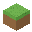
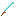
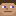
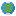

Veja o que a gente cria pro Minecraft antes de colocar no jogo 🎮
Modelos 3D em geral: GLB, GLTF, OBJ, STL, FBX e PLY.
Modelos 3DBichos do Minecraft: modelo de geometria (.json) + textura.
Bedrock · geometry + PNG
Itens (espada, poção…): textura PNG mostrada em pixels e em 3D.
Bedrock · PNG 16×16Blocos: galeria estilo Minecraft e sua textura PNG num cubo.
Bedrock · PNG 16×16
Sua skin de jogador em 3D. No modo Minecraft o boneco anda!
Bedrock · PNG 64×64Escute um som ou música antes de colocar no jogo, com barras dançando.
OGG · MP3 · WAVCola um comando e ele explica cada parte e avisa se tem erro.
Bedrock
Dia/noite, clima, dificuldade e regras — gera os comandos prontos.
/gamerule